Predicting Urban Taxi Demand and Smart Charging Strategies for Electric Fleets
Introduction
Problem Description
Urban taxi demand is highly uneven across both space and time. In a city such as Chicago, trip volumes vary by neighborhood, hour of day, weekday, weather conditions, airport activity, commuting patterns, and local points of interest. For a fleet operator, this creates a practical planning problem: vehicles should be available where passengers are likely to request rides, while unnecessary idle time, empty repositioning, and inefficient charging should be reduced.
This project uses Chicago taxi trips as a proxy for urban ride-hailing demand. The core problem is to understand and predict how many trips will start in different parts of the city during a given time window. In this report, demand is therefore defined as the number of taxi pickups per spatial unit and time interval.
Business Goal
The business goal is to support better operational decisions for a taxi or ride-hailing fleet operator. More accurate knowledge of where and when demand occurs can help operators position vehicles in high-demand areas, reduce passenger waiting times, avoid unnecessary idle time, and improve the utilization of available vehicles. For an electric fleet, this planning task is connected to charging decisions: vehicles need enough energy to serve expected demand, but charging should be scheduled in a cost-efficient way.
From a managerial perspective, the project aims to turn historical trip data into practical recommendations for fleet positioning, demand planning, and charging strategy. The final value of the analysis is not only whether a model predicts demand accurately, but whether the results can inform decisions that improve service reliability and operational efficiency.
Data Mining Goal
The data mining goal is to build a spatio-temporal demand prediction task from raw taxi trip records and external contextual data. Individual trips are aggregated into panels by time window and spatial unit, and the target variable is the number of pickups in each panel cell. Calendar variables, weather data, and spatial identifiers are used as explanatory features.
The project evaluates whether machine learning models can predict aggregate taxi demand at useful resolutions. In particular, Support Vector Machine models and neural networks are trained and compared against simple time-profile baselines. Model performance is assessed using appropriate error metrics and benchmarking, with attention to whether the models perform well not only overall but also in the high-demand areas that matter most for fleet operations. In a second analytical task, a reinforcement learning approach is used to study how charging decisions for an electric taxi can be optimized under operational constraints.
Data Description
The analysis combines taxi trip records, hourly weather observations, spatial reference data, and electricity prices. Taxi and weather data cover 2024-01-01 through 2026-05-31. The period ends in May because the city portal reports recent trips with a delay; including the incomplete June data would create an artificial decline in demand.
Taxi Trip Data
The main source is the Chicago Taxi Trips dataset from the City of Chicago Data Portal (dataset Taxi Trips (2024-)). Each row represents one reported trip by a licensed Chicago taxi. Before cleaning, the extract contains 16,086,196 rows and 21 columns. It includes trip timestamps and duration, distance, fare components, payment type, taxi company, anonymized identifiers, and pickup and dropoff locations.
Locations are reported through the identifiers and centroids of Chicago’s 77 community areas and 878 census tracts. Census tracts provide finer spatial detail but are frequently masked in low-volume areas for privacy. Where tract information is unavailable, the coordinate columns may instead contain community-area centroids. This mixed spatial resolution limits fine-grained interpretation and is considered during data preparation and spatial analysis.
Weather Data
Hourly weather observations are obtained from the Open-Meteo archive API. The dataset contains 21,168 observations and nine variables for the same period as the taxi data. Variables include temperature, apparent temperature, precipitation, snowfall, wind speed, cloud cover, and WMO weather conditions. Weather is joined to the demand data by timestamp and provides exogenous features that can also be known for future prediction periods.
Spatial Reference Data
Official boundary files provide polygons for Chicago’s 77 community areas, 878 census tracts, and the city boundary. They support mapping, spatial joins, and demand aggregation at different geographic resolutions. Point-of-interest data from OpenStreetMap add locations such as transport facilities, amenities, and tourism-related places, helping to characterize areas that may generate taxi demand.
Electricity Price Data
The reinforcement-learning analysis uses EPEX SPOT day-ahead prices obtained through the Fraunhofer ISE Energy-Charts API. The data cover the German–Luxembourg bidding zone from January through March 2025 and are converted from EUR/MWh to EUR/kWh. For each of the 90 days, prices between 14:00 and 16:00 are transformed into eight 15-minute values matching the charging decisions. These published prices are observable to the price-aware charging agent; the price ultimately billed is simulated by adding a random short-term deviation. Details of this transformation and the simulated price process are given in the reinforcement-learning section.
Granularity and Limitations
The cleaned taxi data contain 14,465,662 rows and 27 columns. For spatial analytics and predictions, taxi trip observations are aggregated from individual trips into spatio-temporal demand panels, using community areas or census tracts and hourly or four-hour windows. Key limitations are privacy-related location masking, the reporting lag in recent portal data, mixed spatial precision, and the use of licensed taxi trips as a proxy for wider ride-hailing demand.
Data Preparation
The raw taxi export contains 16,086,196 rows across 21 columns. The cleaning pipeline concatenates the 2024, 2025, and 2026 CSV exports, applies the steps below, and writes the result out as a single Parquet file. In total, 10.1% of trips (1,620,534 rows) are removed:
Duplicate removal. Trips are deduplicated on
trip_idbefore any other filtering (775 rows removed), keeping the first occurrence. Rows without atrip_idare set aside first and rejoined afterward, sincedrop_duplicateswould otherwise treat several genuine but ID-less trips as duplicates of each other.Handling missing spatial identifiers. Chicago reports location at two resolutions:
census_tract(fine-grained) andcommunity_area(77 coarse zones covering the whole city). Tracts are missing for over half of trips — not randomly, but because the city masks any tract with too few trips, for privacy. Community areas are far more complete (98.2% pickup, 91.6% dropoff), since they’re only missing when a trip starts or ends outside city limits. Rather than dropping those out-of-city trips, we keep every row and addpickup_flag/dropoff_flagcolumns marking whether an area is present, so later spatial analyses can filter on the flags without losing the trips for everything else.Resolution-consistent centroids. The centroid latitude/longitude columns silently mix resolutions: where a tract exists, they hold its centroid; where it doesn’t, they fall back to the community area’s centroid. We derive a clean area-to-centroid mapping from exactly the rows where the raw coordinate already is the area centroid and join it back as separate
*_ca_centroid_lat/loncolumns, giving a resolution-consistent coordinate for any area-level aggregation.Removal of incomplete trip records. Trips missing
fare,trip_total,trip_seconds, ortrip_milesare dropped (34,687 rows), since no meaningful analysis is possible without them.Outlier and plausibility filtering. Negative
tips/tolls/extraswould be removed, though none occur in practice — zero is legitimate, for example for cash trips that report no tip. Trips below Chicago’s legal minimum fare ($3.25 flag-drop) or shorter than 60 seconds are treated as test or aborted entries and removed, together with trips above the 99.9th percentile of distance (43.0 miles) or duration (165 minutes). These bounds account for the bulk of all removed rows (1,585,072 of 1,620,534).
payment_type and company are left untouched throughout; their missing values remain as NA and are handled per analysis.
The cleaned dataset has 14,465,662 rows and 27 columns, spanning 2024-01-01 to 2026-05-31. Table 4 in the appendix gives the full column-by-column reference: dtype, completeness, distinct-value count, and description for every column in the cleaned file.
Descriptive Analytics
The descriptive analysis examines when and where taxi demand occurs, how trips differ in length, duration, and price, and whether a small number of spatial hot spots account for a large share of observed demand. Unless stated otherwise, the results in this section refer to the cleaned dataset of 14,465,662 trips between January 2024 and May 2026.
Temporal Demand Patterns
Demand follows a pronounced daily cycle. The lowest volume occurs at 03:00, after which the number of pickups increases rapidly during the morning. Demand remains high from late morning through the evening and reaches its maximum at 17:00, consistent with commuting and after-work travel. It then decreases steadily during the evening. Aggregating the data into four-hour intervals smooths short-lived fluctuations while preserving this overall cycle, which supports the use of both hourly and four-hour windows in the predictive analysis.
The weekday profile is equally distinct. Normalized by the number of observed calendar days, Thursday has the highest average demand at approximately 18,856 trips per day, followed by Wednesday at 18,358. Demand is substantially lower on Saturday (13,314) and reaches its weekly minimum on Sunday (12,591). The initially plausible expectation of a strong late-night weekend peak is not supported by the hourly weekend profile. Taxi demand in this dataset is therefore more closely associated with regular weekday mobility, business activity, and commuting than with weekend nightlife alone. Monthly volumes vary as well, but comparisons across years must be interpreted cautiously because 2026 is only observed through May and the underlying portal data have not accumulated uniformly across all months.
Trip Characteristics and Idle Time
Trip characteristics are strongly right-skewed: most rides are relatively short, while a smaller number of long airport and cross-city journeys raise the averages. The median trip is 3.85 miles long and takes 16.00 minutes, compared with means of 7.09 miles and 20.97 minutes. The median metered fare is $15.25 and the median total charge is $17.75; the corresponding means are $22.06 and $27.01. This difference between medians and means confirms that a small upper tail of long and expensive trips has a material effect on aggregate revenue and vehicle utilization. For a fleet operator, the median describes a typical assignment more reliably, whereas the mean is more relevant for total energy and capacity planning.
Idle time can in principle be approximated as the interval between a taxi’s recorded trip end and its next recorded trip start. The current exploratory notebook does not calculate this measure, and no idle-time estimate is therefore reported here. A valid estimate requires sorting the complete dataset by taxi identifier, calculating consecutive gaps before sampling, and separating genuine waiting time from off-shift periods and incomplete reporting.
Spatial Demand and Resolution
Pickup demand is substantially more concentrated than a city-wide view would suggest. Among trips with a reported pickup community area, Near North Side accounts for 22.99%, O’Hare for 21.02%, the Loop for 16.72%, and Near West Side for 10.33%. Together, these four areas generate more than 70% of spatially assigned pickups. The pattern links demand to three types of urban activity: the central business and tourism districts, major transport hubs, and airport traffic. Pickup and drop-off density maps show broadly similar central concentrations, while airport trips create distinct peripheral peaks.
The choice of spatial and temporal resolution changes what can be learned from these patterns. Community areas provide stable, interpretable operating zones but conceal substantial within-area variation. Census tracts and H3 hexagons reveal more localized structure, yet the counts become sparse and more sensitive to privacy masking and centroid assignment. Likewise, hourly bins retain short demand peaks but are noisier, whereas four-hour bins provide a more stable signal for planning and prediction. The analysis therefore uses coarse units for robust city-wide comparison and finer units where local positioning decisions justify the additional variance.
Spatial Hot-Spot Detection
To identify hot spots more systematically, a Gaussian Mixture Model (GMM) is fitted to the tract-precision pickup locations in the 2025 data. The GMM acts as a parametric spatial kernel density estimator: each component has a center, covariance ellipse, and estimated share of total pickup demand. To avoid interpreting privacy-induced community-area centroids as precise locations, the model uses 2,787,934 tract-resolved pickups at 421 locations inside Chicago. Model comparison indicates an interpretable elbow at six components; a 100-meter covariance floor prevents artificial point masses below the approximately 600-meter empirical spatial resolution of the centroid data.
The fitted surface confirms that demand is highly concentrated. The five largest components cover approximately 97% of tract-resolved pickups. Three components represent the extended downtown area and jointly account for about 73%: River North/Streeterville (approximately 36%), the Union/Ogilvie station district (24%), and the Loop corridor (14%). O’Hare forms a separate component with roughly 21% of demand, while Midway contributes about 3%. The spatial centers coincide with employment, rail infrastructure, hotels, tourism, nightlife, and airport terminals rather than emerging as arbitrary statistical clusters.
The principal hot-spot locations remain broadly stable between day and night, but their relative importance changes. During the day, the central-business components jointly account for approximately 52% of demand and O’Hare for 18%. At night, O’Hare’s share rises to about 36%, River North retains approximately 26%, and the Loop’s relative share falls. Absolute night-time demand is nevertheless lower. Operationally, the result suggests rebalancing a fleet between a stable set of major zones rather than attempting uniform city-wide coverage: vehicles should be concentrated more strongly around the CBD during the day and shifted toward airports and entertainment districts later in the day.
These findings describe observed and served taxi demand, not all latent ride-hailing demand. Centroid coordinates prevent street-level interpretation, privacy masking understates some low-volume tracts, and taxi regulations may make airports more prominent than they would be for app-based ride-hailing services. The hot spots are therefore appropriate for strategic staging and charging-infrastructure decisions, but not for precise curb-level placement.
Predictive Analytics
Problem Description
We predict taxi pickup demand, defined as the number of trips originating in a spatial unit within a fixed time window. Two model families are used: Support Vector Regression (SVR) and feedforward neural networks (NN). Both are evaluated across several spatio-temporal resolutions: community area at 4-hour and 1-hour windows, and census tract at 4-hour windows. Results below are organized by resolution so the two model families can be compared directly wherever both are available; a synthesis of findings across resolutions and models follows in Section 5.5.
Modeling Approach
Both model families share the same task framing: a single pooled model per experiment, trained across all spatial units at once, with spatial identity encoded as one-hot fixed-effect dummies rather than fit as separate per-unit models. This scales to hundreds of census tracts without multiplying training time, and lets panel-construction and evaluation code be reused across resolutions. Two families were tried for complementary reasons: SVR (linear and kernelized) is cheap to fit and, in its linear form, interpretable via coefficients; a feedforward network can in principle learn non-linear interactions between spatial identity and time features that a linear model cannot without hand-built interaction terms, at the cost of a larger tuning surface and no direct coefficient interpretation.
The central obstacle every model in this section has to overcome is that demand is not one distribution, it is dozens (or hundreds) of very different ones. Per-unit demand varies roughly three orders of magnitude across community areas, and the same imbalance only gets sharper at the finer-grained census-tract level, where far more units compete for the same total demand. Each unit also has its own daily and weekly rhythm, not just its own scale: an airport’s demand follows flight schedules and runs around the clock, while a downtown office district peaks at commute hours and goes quiet overnight. A pooled model has to represent all of that with one set of parameters.
This is a genuinely hard bind for SVR specifically. LinearSVR fits a single global coefficient vector, so it can only find one compromise direction that trades off across every spatial unit at once; it has no mechanism to give a high-demand downtown area its own scale and its own rush-hour shape independent of a quiet residential area’s. A kernel SVR (RBF, polynomial, sigmoid) could in principle represent that kind of heterogeneity through non-linear interactions between spatial identity and time features, but its training cost scales quadratically to cubically in the number of rows, which puts the full multi-hundred-thousand-row pooled training set out of reach. In practice this forces kernel variants onto a small subsample (10,000 rows), nowhere near enough to represent dozens of areas’ worth of individual dynamics, and, as the results below show, does not solve the underlying problem even where the tuning itself is trustworthy.
Both use the same exogenous feature set: weather (temperature, precipitation, snowfall, wind, cloud cover), cyclical time encodings (sine/cosine pairs for hour-of-day and day-of-week, two harmonics each to capture the bimodal morning/evening rush), month, and weekend/holiday indicators. Per the constraints of this course, no lagged or autoregressive demand features are used. Only inputs known in advance of a prediction are included. Both regress on log1p(count), with predictions back-transformed via a clipped expm1, since raw demand is heavily right-skewed (Figure 10; median per-unit demand spans roughly three orders of magnitude); without this transform, squared-error loss would be dominated by a handful of high-demand windows.
At census-tract resolution, one-hot spatial dummies for all 878 tracts would be impractical, so tract-level SVR instead reuses the 76 community-area dummies as a coarse spatial layer and adds tract-level covariates as a fine layer: POI count, tract area, and distance to six empirically-derived demand hot spots (identified separately via a Gaussian Mixture Model over pickup coordinates).
Methodological note (not yet reconciled): SVR models every spatial unit with no demand threshold; the NN pipeline restricts training and evaluation to units with historical median demand at or above a fixed threshold. The two families’ pooled results are therefore not directly comparable at face value until this is addressed or explicitly corrected for.
Validation Strategy
Both families use a chronological holdout, training on 2024-01-01 through 2025-12-31 and testing on 2026-01-01 through 2026-05-31, over a complete, zero-filled grid of every spatial unit crossed with every time window. This means evaluation includes genuine zero-demand periods, not only observed trips. SVR hyperparameter search uses KFold (3, shuffled): since no lagged features are used, there is no autoregressive leakage risk a chronological split would guard against, and shuffled folds give an even seasonal mix. The NN training procedure instead splits the training period into a fit set and an early-stopping set (~80/20) by randomly selecting whole days, not individual rows: at any given timestamp all 77 areas share identical time/weather features and differ only by their area dummy, so a row-random split would leak near-identical rows across the two sets. Day-blocking exists specifically to prevent that leakage, which an earlier row-random version of this split did not.
A profile baseline serves as the reference every model is judged against: historical demand per (hour, weekday, month), computed separately per spatial unit – except at census-tract resolution, where the baseline groups by (hour, weekday) only, dropping month, due to the sparser per-tract history at that resolution. Because it is already computed separately per unit, it sidesteps the heterogeneity problem described in Modeling Approach entirely: it never has to compromise across areas the way a pooled model does, which is the main reason it turns out to be such a persistently hard target to beat throughout this section, not any particular weakness of SVR or the NN as an algorithm.
Second reconciliation note: the SVR baseline uses the train-set mean; the NN baseline uses the train-set median. Different reference points mean “beats the baseline” is not yet an apples-to-apples claim across the two families.
Two metrics are reported, and they are not computed the same way, which matters for reading the numbers below correctly. The skill score is a per-unit ratio comparing a model’s MAE to the profile baseline’s MAE for that same unit \(i\):
\[\text{skill}_i = 1 - \frac{\text{MAE}_{\text{model},\,i}}{\text{MAE}_{\text{baseline},\,i}}\]
so each unit’s own demand scale cancels out (skill 0 = tied with the baseline, 1 = zero error, negative = worse than the baseline), making it comparable across units and across resolutions. It is aggregated two ways: demand-weighted skill (the headline number throughout Results) weights every unit’s own skill score by that unit’s median demand \(m_i\),
\[\text{skill}_{\text{demand-weighted}} = \frac{\sum_i m_i \, \text{skill}_i}{\sum_i m_i},\]
so the highest-volume units drive the number, matching a fleet-allocation use case where getting the busiest areas right matters most. The unweighted median (every unit counted equally) is a guard rail against a model that only wins on a few large units and loses everywhere else. The weighted RMSE is a separate, absolute, trips-per-window number reported by both families: pooled RMSE over every row \(j\) in the test set, weighted by that row’s unit’s train-period mean demand \(\bar{d}_{u(j)}\), not the median used for demand-weighted skill above,
\[\text{weighted RMSE} = \sqrt{\frac{\sum_j \bar{d}_{u(j)} \left(y_j - \hat{y}_j\right)^2}{\sum_j \bar{d}_{u(j)}}}.\]
It answers a different question, how large the errors are in absolute trips once high-volume rows are up-weighted, rather than skill’s relative one, how much better than the baseline. It is therefore the metric used for direct SVR-vs-NN comparison below. Plain, uniformly-weighted pooled R²/MAE/RMSE, and the median per-unit R² that recurs throughout Results, are reported only as supporting context, not headline numbers: demand varies roughly 1000-fold across units, so unweighted pooled numbers are dominated by the busiest few, and per-unit R² is noisy for the many near-zero-demand units where there is little variance for any model to explain in the first place.
Results
Community Area, 4-Hour Resolution
SVR. The profile baseline is a much harder reference per-area than pooled numbers suggest (Figure 11): pooled \(R^2\) is 0.933 (weighted RMSE 139.02), but median per-area \(R^2\) is only 0.208, with 21 of 77 areas negative, mostly low-demand areas where near-zero counts leave little variance for any model to explain. A pooled \(R^2\) is dominated by the handful of highest-volume areas, the heterogeneity problem from Modeling Approach showing up directly in a single number, which is exactly why skill score, not pooled \(R^2\), drives the comparisons below.
A pooled LinearSVR’s demand-weighted skill is -0.827 (weighted RMSE 254.94, nearly double the baseline’s): it systematically underperforms the baseline specifically in the highest-demand areas, despite winning on a majority of areas by unweighted median skill (-0.017), since every area contributes an equal number of training rows regardless of demand, so the shared coefficients fit mostly to the low-demand majority (Figure 2). Refitting with sample weights proportional to \(\sqrt{\text{median demand} + 1}\) raises demand-weighted skill to -0.675 (weighted RMSE 231.91) but pushes 53 of 77 areas negative (up from 40): reweighting toward the areas the linear model handles worst comes directly at the expense of the areas it handled comparatively well, a trade-off, not a fix, because one global coefficient vector still cannot serve both regimes at once.
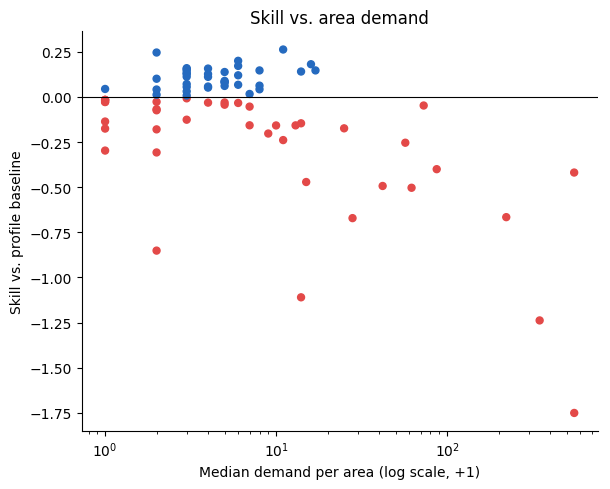
Feature-coefficient analysis shows what the pooled model actually leans on (Figure 3): the dominant coefficient by a wide margin is the primary daily-cycle harmonic (hour_cos), several times larger than any other feature, followed by its second harmonic and the weekend indicator. Every weather variable (temperature, wind speed, cloud cover, precipitation, snowfall) sits at the bottom of the ranking with a coefficient close to zero: the model has correctly identified that demand is driven by the clock, not the weather, even though it still loses to the baseline on the highest-demand areas (a contrast with the census-tract finding below, where a strong static predictor takes over instead and the time signal disappears).
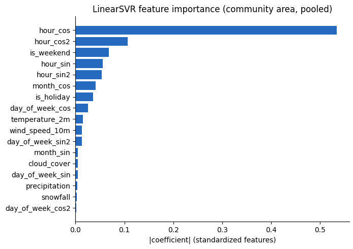
hour_cos) dominates by a wide margin; every weather variable sits at the bottom of the ranking.
Kernel SVR (RBF, polynomial, sigmoid) was compared on the same 10,000-row subsample necessity established above. A first pass caught a methodological trap: scaling the community-area dummy columns flipped which kernel looked best, since RBF’s distance-based kernel was dominated by the inflated dummy scale, so dummies were left unscaled from then on, as with LinearSVR. The subsample winner (polynomial, degree 2) and RBF were then tuned with GridSearchCV (KFold, 3, shuffled, per Validation Strategy) over a small grid (C/degree for polynomial, C/gamma for RBF). Tuning here is trustworthy, not unstable: cross-validated scores track the test set closely for both (polynomial: CV \(R^2 = 0.865\), test \(R^2 = 0.896\); RBF: CV \(R^2 = 0.891\), test \(R^2 = 0.892\)). It still does not solve the underlying problem, though: per-area demand-weighted skill stays negative for both (polynomial -0.221, 49 of 77 areas negative; RBF -0.232, 46 of 77 negative), the same pooled-\(R^2\)-looks-good, per-area-skill-does-not gap as plain LinearSVR above. Kernel tuning is therefore documentation only, not the SVM entry carried forward.
Fully separate per-area models test whether pooling itself is the problem: one dedicated model per area, fit only on that area’s own rows, with no coefficients shared across areas of different scale. This only makes sense above a demand threshold (median \(\geq\) 10 trips/window, 20 of 77 areas, Figure 15): below it, an area’s target has too little variance for any regression model to meaningfully beat its own mean, so the 57 excluded areas keep using the pooled and baseline predictions computed elsewhere instead. This costs real computation: hyperparameters are tuned separately per area (GridSearchCV, TimeSeriesSplit, 3 folds), so tuning becomes 20 grid searches rather than one, roughly 20 to 45 minutes for the RBF grid alone. In exchange, exact kernel SVR, infeasible on the full 337,722-row pooled set, becomes entirely tractable per area, since each area’s own history is only around 4,400 rows. The comparison to pooling is the point, and it is a clear, if narrow, win. Untuned per-area LinearSVR alone reaches demand-weighted skill -0.112, already well ahead of the pooled model’s -0.827, before any tuning. Tuned per-area RBF SVR then becomes the single configuration in the entire study, pooled or per-area, with positive demand-weighted skill: +0.012 (Figure 16); it is no coincidence that the one configuration that wins also abandons pooling. The win is thin, though: median skill is -0.002 and 10 of the 20 areas remain individually negative, even with pooling removed.
Table 1 collects all ten SVR configurations tried at this resolution side by side. The pattern is consistent across every row but one: pooled or per-area, tuned or not, almost everything loses to the baseline on demand-weighted skill, and the single exception wins by a thin margin.
| Model | Units | Dem.-weighted skill | Median skill | Weighted RMSE | Pooled \(R^2\) |
|---|---|---|---|---|---|
| Profile baseline | 77 | 0.000 | 0.000 | 139.02 | 0.933 |
| LinearSVR, pooled | 77 | -0.827 | -0.017 | 254.94 | 0.778 |
| LinearSVR, weighted | 77 | -0.675 | -0.052 | 231.91 | 0.814 |
| LinearSVR, tiered | 77 | -0.732 | 0.000 | 243.60 | 0.800 |
| RBF, tuned | 77 | -0.232 | -0.027 | 176.93 | 0.892 |
| Polynomial, tuned | 77 | -0.221 | -0.049 | 171.71 | 0.896 |
| LinearSVR, per-area | 20 | -0.112 | -0.091 | 156.93 | 0.905 |
| LinearSVR, per-area, tuned | 20 | -0.125 | -0.116 | 161.10 | 0.901 |
| RBF, per-area | 20 | -0.135 | -0.105 | 163.37 | 0.897 |
| RBF, per-area, tuned | 20 | +0.012 | -0.002 | 143.80 | 0.921 |
NN. The untuned Shallow NN (one hidden layer, hidden_dim=64) reaches demand-weighted skill -0.028 (weighted RMSE 144.96, pooled \(R^2\) 0.925, 14 of 77 areas negative) with zero tuning effort, already close to breaking even and comfortably ahead of every pooled SVR variant in Table 1. An architecture search (one-factor-at-a-time over capacity, dropout, weight decay, learning rate, and batch size, followed by a combine-the-improving-knobs retrain) selects weight_decay=1e-4 alone as the single best-performing change during the early-stopped search phase, reaching demand-weighted skill +0.034 on that search split; the only other individually-improving knob, batch_size=128, was also tried combined with it, but that pairing scored -0.083 on the same split, far worse than either knob alone, a negative interaction discarded in favor of the single best knob. Refit from scratch on the full training set, however, the selected weight_decay=1e-4 configuration’s actual performance is -0.027 (weighted RMSE 145.93, pooled \(R^2\) 0.927, 9 of 77 areas negative) – essentially level with the untuned Shallow NN rather than the clear win its search-phase evaluation of +0.034 suggested. The search’s early-stopping criterion is evaluated on a smaller held-out slice of the training set than the final refit uses, and nothing guarantees the two agree.
| Model | Dem.-weighted skill | Median skill | Weighted RMSE | Pooled \(R^2\) | Fit time |
|---|---|---|---|---|---|
| Profile baseline | 0.000 | 0.000 | 139.02 | 0.933 | 1s |
| Shallow NN (untuned) | -0.028 | 0.097 | 144.96 | 0.925 | 324s |
| Deep NN (tuned) | -0.027 | 0.071 | 145.93 | 0.927 | 2,333s |
Per-area performance shows the tuned Deep NN did not perform well on the airport (O’Hare, community area 76): its demand-weighted skill there is -0.227, the single worst area/model result in the whole experiment (next-worst area: -0.072), while the untuned Shallow NN loses much less on the same area (-0.020), and several other high-demand areas actually improve under Deep NN tuning (e.g. +0.036 and +0.076 for two other top-demand areas). O’Hare’s demand follows flight schedules around the clock rather than the commute-driven daily cycle most other areas share; the pooled network shares one hour-of-day/weekday representation across all 77 areas plus a per-area additive one-hot term, and evidently does not bend that shared temporal shape enough to match O’Hare’s distinct profile, even though it is in principle expressive enough to do so.
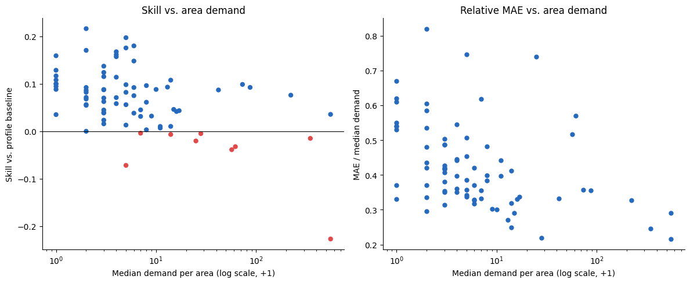
An attempt was made to close that specific gap directly: a variant (notebooks/03_predictive_analytics/misc/03.04_prediction_nn_CA_4h_airport_time_features.ipynb) added explicit O’Hare-by-time-of-day interaction features (the O’Hare one-hot dummy multiplied by each hour-of-day harmonic), giving the network direct access to a distinct diurnal shape for O’Hare instead of requiring the hidden layer to discover one unaided. This made things worse, not better: re-running the full architecture search with these features added produced a tuned Deep NN with demand-weighted skill -0.186, worse than without the added features. The change was therefore not adopted; the numbers reported above are from the original feature set.
Permutation feature importance on the Shallow NN (Figure 5) lands on the same answer SVR’s coefficients did (Figure 3): the primary and second hour-of-day harmonics dominate by a wide margin, day-of-week and month contribute a little, and every weather variable sits at essentially zero – a different model family and a different importance method arriving at the same conclusion, that this demand is driven by the clock, not the weather.
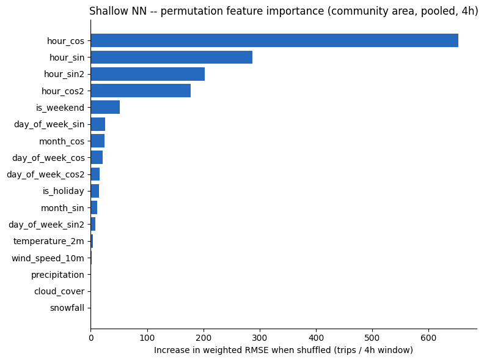
Shared finding. Both model families hit the same wall from a different direction. SVR’s single global coefficient vector cannot represent per-area heterogeneity at all, so it settles for one compromise that loses specifically on the highest-demand areas (Figure 2). The NN has the representational capacity to learn per-area time interactions through its hidden layer, and the untuned Shallow NN gets close to breaking even, but the tuned Deep NN’s failure is concentrated in exactly the same kind of place: the single highest-demand area whose temporal shape looks least like the pooled average. Pooling remains the common thread across both families: the one configuration in the entire community-area, 4-hour study with positive demand-weighted skill is still the per-area RBF SVR that abandons pooling altogether (Table 1), not any pooled NN variant.
Community Area, 1-Hour Resolution
SVR. This resolution is a deliberate scaling stress test: same 77 areas, roughly 4x the rows, heavier zero-inflation, and a harder baseline too, since it now resolves 24 hourly buckets instead of 6 (baseline weighted RMSE 39.46). A pooled LinearSVR’s demand-weighted skill is -1.016 (weighted RMSE 76.96), a worse deficit than the 4h resolution’s -0.827 for the same model type: finer time resolution sharpens the heterogeneity problem rather than easing it, since the same 77 areas must now be told apart across four times as many hourly buckets.
Kernel comparison and tuning on a 10,000-row subsample favor RBF: after tuning, RBF reaches demand-weighted skill -0.331 (weighted RMSE 54.53), polynomial reaches skill -0.361 (weighted RMSE 56.14): the best 1h configurations, though both still negative.
Demand-tiered and per-area models were attempted but dropped at this resolution: per-area GridSearchCV’s parallel fan-out, on top of the larger 1h panel, exceeded available memory.
Verification note: unlike every other number in this section, the SVR figures above could not be cross-checked against a saved execution – 03.02 has no saved cell output and no corresponding row in results/model_results_summary.csv (see Limitations). Treat this subsection’s specific figures as unverified until a live run is captured.
NN. Unlike at 4-hour resolution, the tuned Deep NN wins outright here: demand-weighted skill +0.062 (weighted RMSE 36.26, pooled \(R^2\) 0.928), the only NN configuration with positive demand-weighted skill anywhere in this study, and better than every SVR variant tried at this resolution (best SVR: tuned RBF at -0.331). The untuned Shallow NN stays negative here too (skill -0.048, weighted RMSE 42.28, pooled \(R^2\) 0.903). Note that this is not a fresh architecture search at 1-hour resolution: 03.05 reuses the exact configuration 03.04 selected at 4-hour resolution (only the early-stopping epoch count is redetermined on the 1h data), so this result is evidence that the 4-hour search’s selected configuration transfers well to 1-hour resolution, not that a separately-run tuning effort succeeded here where it failed at 4-hour resolution.
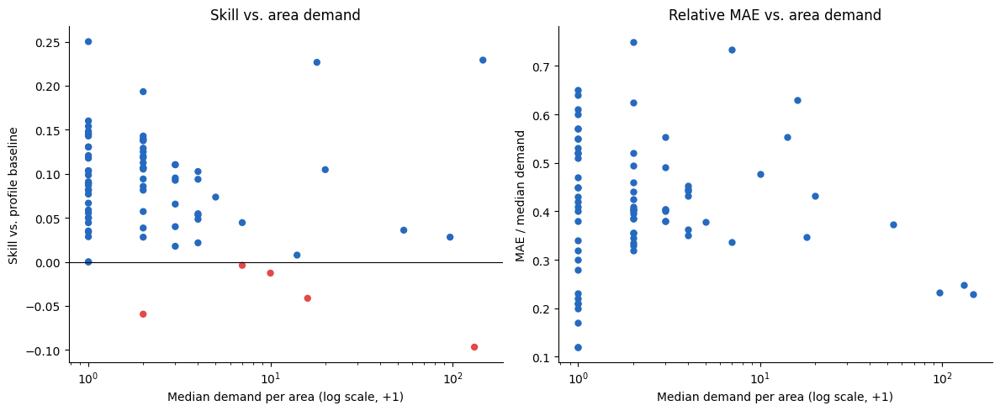
| Model | Dem.-weighted skill | Median skill | Weighted RMSE | Pooled \(R^2\) | Fit time |
|---|---|---|---|---|---|
| Profile baseline | 0.000 | 0.000 | 39.46 | 0.918 | 2s |
| Shallow NN (untuned) | -0.048 | 0.118 | 42.28 | 0.903 | 380s |
| Deep NN (tuned) | +0.062 | 0.090 | 36.26 | 0.928 | 591s |
Census Tract Resolution
Only 44.6% of trips carry a true tract-level location; the rest are masked to their community area’s centroid for privacy whenever a trip’s originating tract had too few trips in that period. Masking is far from uniform: retention ranges from 0% to 70.9% by community area, with a clean gap in the distribution between roughly 5% and 7%. Areas below that gap have too little tract-precision data to support any tract-level model at all. This is not a modeling choice but a data-availability ceiling, leaving 179 of 878 tracts, across 11 community areas, in scope (Figure 20); the remaining areas fall back to the community-area-resolution model. Within scope, counts are built from tract-precision trips only (never the masked fallback points, which would otherwise spike demand artificially onto whichever tract contains a community area’s centroid) and scaled by each area’s inverse retention rate to estimate total demand. Given the smaller per-unit training data at this resolution, only a pooled LinearSVR is fit and reported; kernel SVR gets only a quick, untuned documentation-only snapshot on a subsample and is not tuned or carried forward as a candidate, following the same compute-cost reasoning established at community-area resolution, now at an even smaller per-unit scale. A tract-level NN pipeline (03.06) exists but is still being finalized and is not reported in this chapter. A census-tract, 1-hour combination was deliberately not attempted either: it would stack both axes that make pooling hard at once, 179 units instead of 77 and the four-fold finer time buckets that already sharpened the problem at community-area resolution (Section 5.5), on top of tract-level data that is already thinner per unit than the community-area panel.
SVR. The profile baseline is strong here too (pooled \(R^2 = 0.860\)), though the per-tract split is noisier than community-area’s (Figure 21): median per-tract \(R^2\) is only 0.170, with 38 of 179 tracts negative, the same pooled-versus-per-unit gap seen at community-area resolution, now wider because there are more than twice as many units to average over.
Pooled LinearSVR fares far worse than at coarser resolutions. Demand-weighted skill, the headline metric everywhere else in this report, is not available here: the weighting computation returns NaN for this model, a data issue not yet root-caused (see Limitations), so unweighted median skill is reported in its place: -0.259, with 90 of 179 tracts negative. Weighted RMSE is 355.19, more than double the baseline’s 133, and pooled \(R^2\) collapses to 0.026. This is the clearest illustration in the whole study of what a single global coefficient vector does when it cannot represent per-unit heterogeneity: rather than fail gracefully, it gives up on time altogether and settles for representing which tract a row belongs to.
Feature-coefficient analysis confirms this directly (Figure 7; Figure 22): GMM hotspot-distance features, which take one fixed value per tract, carry 99.6% of total |coefficient| mass despite being only 6 of the 25 continuous features, while time/calendar and weather coefficients are effectively zero. The model has learned each tract’s average demand level from its distance to the nearest hot spot rather than any time-varying signal.
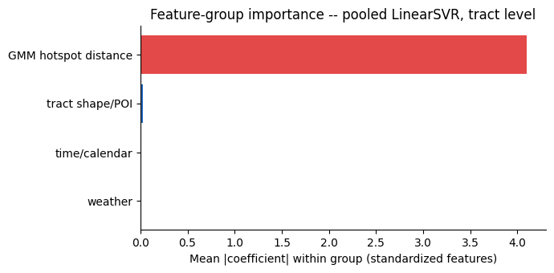
Actual-vs-predicted plots for the top-3 tracts confirm this directly (Figure 8; Figure 9): predicted demand sits flat near zero across an entire evaluation week while actual and baseline demand both trace the expected daily cycle, a sharp contrast with the community-area case, where the models at least track the shape of demand even while missing the peaks (Figure 14). With 179 pooled units instead of 77, between-unit demand variance dominates the loss even more than at community-area resolution, and the tract-level hotspot-distance covariates give the optimizer an easy per-unit shortcut, at the cost of the temporal signal the model exists to capture.
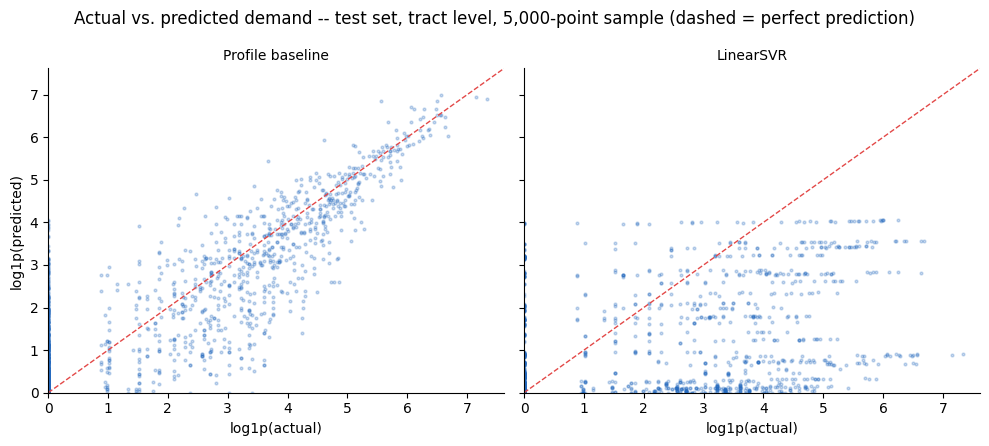
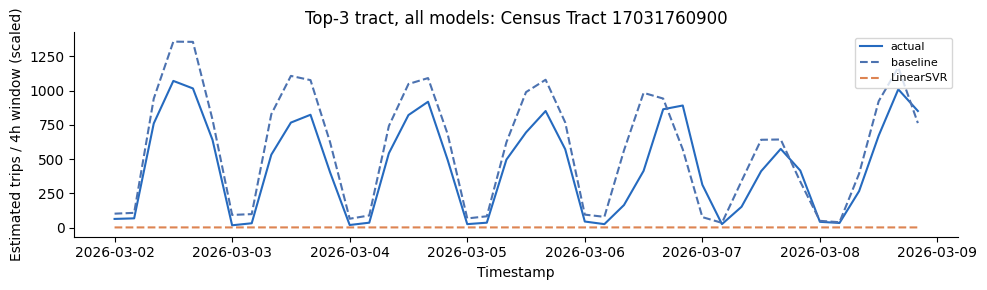
Cross-Cutting Discussion
Across every SVR variant tried at community-area resolution (pooled, demand-weighted, demand-tiered, per-area), the profile baseline is a surprisingly strong reference specifically where demand is largest (Figure 13; Figure 24), the same heterogeneity problem from Modeling Approach playing out consistently across every variant. It is compounded by an interaction between the log1p/expm1 transform and a squared-error-adjacent loss, which amplifies error multiplicatively: a small log-space miss becomes a large absolute error exactly for the highest counts, a penalty the baseline never incurs since it predicts directly on the raw scale.
NN. The NN results add a resolution-dependent twist to the pooling story above: the architecture that 03.04’s search selects at 4-hour resolution produces a large, clear win once reused at 1-hour resolution (Deep NN demand-weighted skill +0.062, the only positive NN result in the study), but is roughly a wash at the 4-hour resolution the search was actually run on (-0.027 tuned vs. -0.028 untuned), despite a full architecture search and around 39 minutes of fit time. That wash hides a specific failure, though: essentially all of the tuned Deep NN’s shortfall at 4-hour resolution is concentrated in one area, O’Hare, whose distinct round-the-clock demand pattern the pooled architecture cannot represent even though it has the capacity to in principle – and an attempt to fix that directly, by adding O’Hare-specific time-of-day interaction features, made both the O’Hare-specific and the overall result worse rather than better. Combined with the architecture search’s own selection instability – the configuration selected on the early-stopped search split scored +0.034 there but only -0.027 after refitting on the full training set – this suggests the NN’s added flexibility is not yet reliably converted into a better fleet-allocation model than the much cheaper profile baseline.
Comparing SVR across resolutions, demand-weighted skill for matching model types is worse at 1h than at 4h (-1.016 vs. -0.827 for pooled LinearSVR; -0.331 vs. an untested comparison point for tuned RBF), suggesting finer time resolution makes the high-demand gap harder to close, not easier. This is plausibly due to thinner per-window signal and heavier zero-inflation.
This synthesis is preliminary: it excludes NN results at census-tract resolution (that notebook is still in progress) and a reconciled SVR-vs-NN weighted-RMSE comparison at 4h (pending the scope/baseline fixes noted in Section 5.3). Revisit once both land.
Practical Implications for Fleet Allocation
The heterogeneity problem also points toward a more realistic deployment strategy than the one tested here: a business does not need one model that works for every spatial unit, including the many low-demand areas that contribute little to a fleet-allocation decision anyway. It needs good predictions specifically where trip volume is high, since that is where allocation decisions have the most impact.
The one result in this entire study with positive demand-weighted skill, the tuned per-area RBF SVR on the 20 highest-demand community areas (+0.012), is also the only one that abandons pooling in favor of a dedicated model per area, for exactly the reasons described above. The practical recommendation this suggests is to not chase one pooled model across all 77 (or 179, or 878) units, but to identify the small set of highest-demand areas that account for most of the fleet-allocation value, fit each one its own model, and leave the long tail of low-demand areas to the simple profile baseline, which already handles them about as well as anything tested here.
The NN results reinforce this same conclusion from a different angle: even a model with enough representational capacity to in principle learn per-area, per-hour patterns still fails hardest, at 4-hour resolution, on the single highest-demand area in the panel (O’Hare, community area 76) once pooled in with the rest. Whichever model family is ultimately deployed for fleet allocation, the highest-value areas likely need their own dedicated treatment rather than a share of one pooled model’s parameters, regardless of which model family that pooled model comes from.
Limitations & Outlook
- SVR and NN are not yet evaluated on matched scope: differing demand thresholds and baseline definitions (mean vs. median) mean cross-family numbers above are directional, not exact, until reconciled.
- Kernel-SVR tuning at community-area resolution is trustworthy but still loses per area:
GridSearchCVcross-validated scores track the test set closely (an earlier draft of this section claimed the opposite, based on a since-corrected notebook run), but pooled \(R^2\) looking strong (0.89-0.90) still does not translate into positive per-area demand-weighted skill, the same gap seen throughout this section. - Demand-weighted skill is unavailable (
NaN) for the pooled census-tractLinearSVR: the weighting computation fails for this model specifically, not yet root-caused, so that paragraph reports unweighted median skill instead, breaking the otherwise-consistent headline metric used across every other model in this report. - Pooled SVR at census-tract resolution underperforms its baseline (median skill -0.259, pooled \(R^2 = 0.026\) vs. baseline 0.860): GMM hotspot-distance features absorb 99.6% of coefficient mass, so the model effectively predicts a constant level per tract and ignores time entirely. This is worth revisiting with per-unit time interactions rather than treated as a data-availability issue.
- No rolling-origin backtest for either family: a single chronological holdout is used throughout.
- 1-hour resolution numbers are unverified: the
03.02notebook has no saved execution output and no corresponding row inresults/model_results_summary.csv, so the figures cited in that subsection could not be cross-checked against a live run the way every other number in this section was. - The NN architecture search’s own selection criterion does not reliably transfer: at community-area, 4-hour resolution, the search selects
weight_decay=1e-4as the single best knob based on early-stopped performance on a held-out slice of the training set (demand-weighted skill +0.034 there), then refits it from scratch on the full training set. That refit’s actual performance is -0.027, essentially level with the untuned Shallow NN (-0.028) rather than the clear win the search-phase evaluation suggested – the search is not currently a reliable guide to final, full-train performance, even though this same selected configuration, reused as-is at 1-hour resolution (03.05does not repeat the search), performs clearly well there; a config transferring well to another resolution is not yet strong evidence the search procedure that produced it is sound. - NN pooling fails hardest on the single highest-demand area: at community-area, 4-hour resolution, O’Hare (tied for the highest median demand in the panel) scores -0.227 under the tuned Deep NN, the worst result of any area/model pair in this study, while several other high-demand areas actually improve under the same model. This is consistent with O’Hare’s round-the-clock, flight-schedule-driven demand differing in shape, not just scale, from most other areas’ commute-driven cycle – exactly the kind of per-area interaction the NN’s hidden layer is supposed to be able to learn, but evidently does not here. An attempt to close this gap directly by adding O’Hare-by-time-of-day interaction features (
notebooks/03_predictive_analytics/misc/03.04_prediction_nn_CA_4h_airport_time_features.ipynb) made the overall demand-weighted skill worse (-0.186), not better, so that change was not adopted. - NN tuning cost is not yet justified by its results: the community-area, 4-hour architecture search took roughly 39 minutes of fit time and produced a configuration that essentially matches, rather than beats, the untuned Shallow NN (324s), and both still trail the near-instant profile baseline.
- NN results at census-tract resolution are not yet reported: a tract-level pipeline (
03.06) exists and has produced results, but it is still being finalized and is excluded from this chapter until it is.
See Section 8 for detailed tables and figures.
Intelligent Charging with Reinforcement Learning
Problem Setup
The task is defined around an electric taxi that arrives at its home charger at 14:00 and departs at 16:00. During this two-hour window, a charging decision is made every 15 minutes, resulting in eight decisions per episode. The objective is to minimize charging cost while leaving enough energy for the next shift. Any energy shortage at departure is penalized at EUR 100 per missing kWh – an arbitrarily set severity, chosen to make a shortfall categorically worse than any charging cost rather than derived from an actual operational figure.
To represent a heterogeneous fleet, battery capacity is sampled uniformly from 40, 60, and 77 kWh in each episode, corresponding to compact, mid-size, and large vehicle classes. Initial state of charge (SOC) is independently sampled between 20% and 60% of capacity. The energy required for the next shift is drawn from \(d\sim\mathcal{N}(30,5^2)\) kWh and clipped to the vehicle’s capacity; this value enters the shortage penalty only at the terminal step rather than being observed during charging. The demand distribution is therefore known throughout charging, while the specific requirement remains unresolved until the terminal step and must be hedged against.
Markov Decision Process
The charging problem is modeled as a finite-horizon Markov Decision Process. Without day-ahead price information, the state is
\[ s_t=[SOC_t,t,C], \]
where \(SOC_t\) is the current energy level, \(t\in\{0,\ldots,8\}\) is the time step, and \(C\) is battery capacity. The realized demand is deliberately excluded from the state. When day-ahead price information is included, the state is extended with the current day-ahead price and the mean remaining day-ahead price:
\[ s_t^{EPEX}=[SOC_t,t,C,\pi_t^{DA},\bar{\pi}_{\geq t}^{DA}]. \] Four discrete charging powers of 0, 5, 11, and 22 kW are used initially. Because this coarse spacing leads to degenerate behavior under the exponential cost function, a refined grid of 0, 4, 8, 12, 16, 20, and 22 kW is used instead in a second experiment. Both DQNs are retrained from scratch on this grid, which is used for the primary results below. For a 15-minute interval, the transition is
\[ SOC_{t+1}=\min(C,SOC_t+p_t\cdot0.25). \]
The step reward is the negative charging cost. After the eighth decision, a terminal penalty is added if \(SOC_8<d\):
\[ r_8=-\text{cost}_8-100\max(0,d-SOC_8). \]
A cost–reliability trade-off results: additional energy is inexpensive relative to a shortage, while the tail risk must be learned from sampled experience.
Cost Environments and Electricity Prices
Two gymnasium environments are used, sharing the same battery dynamics and hidden-demand process but differing in charging-cost model. In the stylized environment, the cost of selecting power \(p\) in interval \(t\) is defined as
\[ \operatorname{cost}(t,p)=\alpha_t\exp(p), \]
where \(\alpha_t\) increases from \(2.0\times10^{-10}\) to \(7.2\times10^{-10}\) over the charging window. The small coefficients are required because \(\exp(22)\) is approximately \(3.6\times10^9\). Even charging at 22 kW in all eight intervals costs only 11.90 reward units, compared with the shortage penalty of EUR 100 per missing kWh. Consequently, the original costs of 0, 5, and 11 kW are almost indistinguishable, while 22 kW constitutes a separate, much more expensive tier. Jumps between adjacent actions are reduced by the refined grid, allowing more graduated control, although the cost function remains nonlinear. The stylized model should therefore be interpreted as an artificial power-dependent reward rather than a realistic electricity tariff.
Ninety daily price profiles from the German–Luxembourg bidding zone for January through March 2025 are used in the EPEX environment. Hourly EPEX SPOT day-ahead prices are converted from EUR/MWh to EUR/kWh and linearly interpolated to the eight quarter-hour decisions between 14:00 and 16:00. The resulting day-ahead prices range from EUR -0.026 to EUR 0.371 per kWh, with a median of EUR 0.110 per kWh.
Only the day-ahead price – the current value and the mean of the remaining window, published one day in advance – is observed by the price-aware agent. Charging is billed at the realized price
\[ \pi_t=\pi_t^{DA}+\varepsilon_t, \qquad \varepsilon_t\sim\mathcal{N}(0,0.015^2)\ \text{EUR/kWh}, \]
which is not observable before the decision. \(\varepsilon_t\) represents the gap between the day-ahead forecast and the delivery price and is simulated rather than drawn from a second price dataset. Price profiles are loaded from a local cache, with the Fraunhofer ISE Energy-Charts API used only as a fallback.
Both cost formulations deviate from a purely quadratic \(p^2\) charging-cost specification defined above: the stylized cost emphasizes a strongly nonlinear power penalty, while the EPEX cost treats energy procurement as the relevant marginal cost. The two environments are therefore complementary experiments rather than directly comparable tariffs, and a policy learned under the stylized cost structure cannot be expected to remain cost-efficient under real per-kWh prices.
Learning Algorithm and Benchmarks
Two Deep Q-Networks (DQN) are trained: a price-unaware agent in the stylized environment and a price-aware agent in the EPEX environment. A multilayer perceptron with two hidden layers of 128 units and identical hyperparameters is used for both. Training lasts 200,000 time steps, equivalent to approximately 25,000 simulated charging days. Performance is evaluated on 1,000 paired episodes, using identical seeds so that capacity, initial SOC, demand, price day, and simulated price deviations match across strategies.
The operational benchmark is a price-blind greedy heuristic. Because demand is unknown, charging is not targeted at the realized requirement; instead, a fixed target is used:
\[ \tau=\min(C,\mu+2\sigma)=\min(C,40\text{ kWh}), \]
corresponding to an approximate 97.7% service level under the assumed normal distribution. At each step, the energy still missing from this target is spread over the remaining time, and the smallest sufficient charging power is selected.
An exact brute-force benchmark is used, evaluating every action sequence. For the original grid this requires \(4^8=65{,}536\) sequences, evaluated on 100 episodes. The refined grid increases the search to \(7^8=5{,}764{,}801\) sequences, so the EPEX oracle evaluation is restricted to 40 episodes. The realized demand and, in the EPEX setting, the realized billed prices, are known to this oracle benchmark in advance, making it a theoretical upper bound rather than an implementable policy.
Results
An action-space problem is evident in the original four-action experiment. In the stylized environment, the price-unaware DQN succeeds in 95.5% of the 1,000 episodes and achieves a mean reward of -17.201, compared with 98.9% and -2.581 for greedy. Because charging at 11 kW is almost free relative to 22 kW, 11 kW is selected almost exclusively by the learned policy; its action entropy is only 0.039 bits.
With the refined grid, the price-unaware DQN succeeds in 98.3% of episodes and achieves a mean reward of -1.855. Greedy succeeds in 98.9% and obtains -2.058. The DQN’s action entropy rises to 1.522 bits, indicating graduated control rather than collapse onto a single action. Much of the original performance gap is therefore explained by action-grid resolution: in its training environment, the reliability of greedy is nearly matched by the refined DQN, whose mean reward is slightly higher.
Under EPEX prices, greedy succeeds in 98.9% of episodes, compared with 98.3% for the refined DQN trained in the stylized environment and 75.2% for the refined price-aware DQN. Their unconditional mean charging costs are EUR 1.7223, EUR 2.0424, and EUR 0.9931 per day, respectively. Mean rewards, which also include shortage penalties, are -3.7775 for greedy, -3.8872 for the DQN without EPEX data, and -88.0377 for the price-aware DQN. The price-unaware DQN now nearly matches greedy in reliability, but its charging cost remains 18.8% higher on episodes in which both succeed, because its policy was trained against the stylized exponential cost rather than real per-kWh prices.
In the 752 episodes where both greedy and the price-aware DQN cover demand, the price-aware DQN saves EUR 0.6296 per day, or 41.7%, relative to greedy and is cheaper in 88% of episodes. Policy maps show the intended behavior: at sufficiently high SOC, high power is selected during cheap intervals and charging is deferred during expensive ones; as SOC decreases or departure approaches, charging urgency increasingly dominates over price. However, this conditional comparison does not establish that the price-aware DQN is the better overall policy: even among successful episodes, different quantities of reserve energy may be purchased by each strategy, and the much lower overall success rate remains excluded from this cost figure.
The cost advantage remains inseparable from inadequate demand insurance: a 75.2% success rate is not operationally acceptable for a taxi fleet, even when costs are lower on successful days. On the reduced 40-episode sample, the oracle reaches 100% success at approximately EUR 0.87 per day, but this relies on information unavailable to any real agent. Day-ahead information therefore has value for charge timing, while the price-aware DQN still requires an explicit reliability safeguard.
Operational Implications and Limitations
In the stylized experiment, the refined DQN and the service-level heuristic perform similarly, while the sensitivity of DQN to action-space design is demonstrated by the coarse-grid result. Under dynamic prices, cheap intervals can be exploited by learned control, particularly when the vehicle arrives with sufficient SOC and prices vary substantially within the charging window. However, part of the apparent saving of the price-aware DQN is attributable to carrying too little reserve. The learned policy should therefore be placed behind a safety layer in a practical implementation, for example a hard minimum-SOC rule during the final intervals, or trained with a stronger asymmetric shortage objective. Private charging combined with a dynamic electricity contract is the most controllable setting for realizing timing-based savings; less opportunity for price-aware scheduling exists under public charging with fixed tariffs.
The analysis remains a proof of concept. One two-hour charging window, stylized battery dynamics, no charging losses or battery degradation, and a fixed normal demand distribution are considered. A fixed-power flat-rate baseline has not yet been evaluated, and the required sensitivity analysis for alternative demand levels such as 25, 30, and 35 kWh is still missing. Moreover, the linear energy-cost model should either be complemented by the assignment’s quadratic power-cost formulation or retained only with the stated interpretation. These additions are necessary before an infrastructure or deployment recommendation can be made.
Conclusion
Key Findings for Fleet Operations
The analysis shows that the greatest immediate value for a potential fleet operator lies in combining robust demand patterns with transparent operational rules rather than relying on a single complex model. Taxi demand is strongly concentrated in both space and time: more than 70% of spatially assigned pickups originate in Near North Side, O’Hare, the Loop, and Near West Side, while demand peaks on weekdays and in the late afternoon. These patterns support a zone-based operating strategy in which vehicles are staged primarily in the central business district and at major transport hubs, with time-dependent rebalancing toward airports and entertainment areas later in the day. The results should, however, be interpreted as observed taxi demand rather than total latent mobility demand.
Demand Forecasting Strategy
For demand forecasting, model complexity did not consistently translate into operationally better predictions. The historical profile baseline remained difficult to outperform, particularly in high-volume areas. Most pooled SVR and neural-network specifications produced negative demand-weighted skill, although the deep neural network achieved a small positive skill at one-hour resolution and dedicated RBF models for the 20 highest-demand community areas also slightly improved on the baseline. This suggests a hybrid forecasting architecture: use simple profile forecasts for the long tail of low-volume areas and train dedicated models only for the small number of strategically important high-demand zones. Such an approach is easier to maintain, more interpretable, and better aligned with the concentration of fleet-allocation value than one city-wide pooled model.
Charging Strategy and Reinforcement Learning
The charging experiment leads to a similar conclusion. The price-blind greedy policy reached a 98.9% success rate and clearly outperformed both DQN agents once shortage penalties were included. The price-aware DQN demonstrated that dynamic electricity prices can reduce charging costs when sufficient energy is available, but its 75.9% reliability is not acceptable for fleet operations. Reinforcement learning should therefore not yet control charging without a safety mechanism. A practical system could use price-aware scheduling within hard minimum-SOC and departure-energy constraints, preserving the cost benefit of flexible charging without putting the next shift at risk.
Private versus Public Charging Infrastructure
For a fleet with regular depot returns, private charging infrastructure is the preferable long-term option. It provides predictable availability, operational control, and access to dynamic electricity tariffs, while public chargers introduce travel time, queues, uncertain availability, and generally less control over prices. Public charging nevertheless remains useful as a backup and for vehicles that cannot reliably return to a depot. The recommended strategy is therefore a mixed system: install private chargers at one or more fleet bases near the main operating corridors and use public fast charging for contingencies and peak demand. The present analysis supports this operational direction, but it does not by itself justify a specific number, capacity, or location of chargers because infrastructure costs, grid-connection limits, depot locations, public-charger availability, and complete vehicle duty cycles are not included in the dataset.
Further Analysis and External Data
Several extensions would strengthen the business case. The existing trip data could be used to construct full vehicle duty cycles and valid idle-time distributions, estimate repositioning distances, test rolling-origin forecasts, and evaluate prediction performance under a common scope and baseline. Charging simulations should cover complete operating days, alternative energy-demand scenarios, charging losses, battery degradation, charger congestion, and a fixed-power or flat-rate benchmark. Particularly useful external sources would include public charger locations, power levels, prices and occupancy; depot and electricity-grid data; real-time traffic and road-network travel times; flight and public-transport schedules; major events; and more complete weather forecasts. These additions would permit a joint location and capacity analysis comparing the total cost of private infrastructure with public-charging fees, detours, waiting time, and lost service revenue.
Advantages, Limitations, and Business Recommendation
Overall, the project provides a useful proof of concept rather than a deployment-ready optimization system. Its main advantages are the large trip dataset, the combination of spatial, predictive, and charging analyses, and the use of operationally meaningful benchmarks. Its main limitations are spatial privacy aggregation, incomplete and partly inconsistent model comparisons, the absence of valid idle-time estimates, and simplified charging assumptions. Accordingly, the fleet operator should initially deploy a conservative, interpretable planning system based on demand profiles, hotspot-specific forecasts, and rule-based charging, while collecting the operational and infrastructure data required for a later, safely constrained optimization solution.
Appendix: Detailed Tables and Figures
Figures below are grouped by resolution, in the same order as the Results section, and cover what is not already shown inline there. The most central figures for each resolution (feature importance, the skill-vs-demand relationship, and the flat-prediction evidence at tract level) appear directly in Results instead of here. NN figures at census-tract resolution are not yet included, since that notebook (03.06) is still being finalized.
Cleaned Dataset: Column Reference
Every column of data/chicago_taxi_2024_2026_clean.parquet (14,465,650 rows), with dtype, completeness, and distinct-value count as measured on that file, plus what the column means and any caveat carried over from the cleaning steps in Section 3 (e.g. census-tract masking, the two coordinate resolutions).
| Column | Dtype | Non-Null % | Distinct | Description |
|---|---|---|---|---|
trip_id |
str | 100.0% | 14,465,650 | Unique trip identifier (hash). Deduplicated in cleaning step 1. |
taxi_id |
str | 100.0% | 3,354 | Anonymized vehicle identifier (hash). |
trip_start_timestamp |
datetime64[us] | 100.0% | 84,660 | Local Chicago date/time the trip started. |
trip_end_timestamp |
datetime64[us] | 100.0% | 84,664 | Local Chicago date/time the trip ended. |
trip_seconds |
float32 | 100.0% | 9,722 | Trip duration in seconds (>= 60s, capped at the 99.9th percentile). |
trip_miles |
float32 | 100.0% | 4,303 | Trip distance in miles (> 0, capped at the 99.9th percentile). |
pickup_census_tract |
float32 | 44.6% | 149 | Pickup census tract (FIPS code). Missing for ~55% of trips – privacy masking of low-volume tracts. |
dropoff_census_tract |
float32 | 43.3% | 175 | Dropoff census tract (FIPS code). Same privacy masking as pickup. |
pickup_community_area |
Int64 | 98.2% | 77 | One of 77 official community areas for the pickup. Missing means the pickup was outside city limits. |
dropoff_community_area |
Int64 | 91.6% | 77 | Community area for the dropoff. Missing means the dropoff was outside city limits. |
fare |
float32 | 100.0% | 9,078 | Metered fare in USD (>= $3.25 flag-drop minimum). |
tips |
float32 | 100.0% | 3,619 | Tip amount in USD. 0 is valid – cash trips report no tip. |
tolls |
float32 | 100.0% | 560 | Toll charges in USD. 0 is valid – most trips use no toll roads. |
extras |
float32 | 100.0% | 3,624 | Additional surcharges in USD. 0 is valid. |
trip_total |
float32 | 100.0% | 14,616 | Total amount charged in USD (>= $3.25). |
payment_type |
category | 100.0% | 7 | Payment method (Credit Card, Cash, Mobile, Prcard, Unknown, …). Left untouched by cleaning. |
company |
str | 100.0% | 45 | Taxi affiliation / operating company. Left untouched by cleaning. |
pickup_centroid_latitude |
float32 | 98.2% | 571 | Pickup latitude: census tract centroid where known, else community area centroid (mixed resolution). |
pickup_centroid_longitude |
float32 | 98.2% | 565 | Pickup longitude, same mixed-resolution rule as latitude. |
dropoff_centroid_latitude |
float32 | 92.1% | 684 | Dropoff latitude, same mixed-resolution rule. |
dropoff_centroid_longitude |
float32 | 92.1% | 678 | Dropoff longitude, same mixed-resolution rule. |
pickup_flag |
int64 | 100.0% | 2 | 1 if pickup_community_area is present, 0 if missing (outside Chicago). |
dropoff_flag |
int64 | 100.0% | 2 | 1 if dropoff_community_area is present, 0 if missing (outside Chicago). |
pickup_ca_centroid_lat |
float32 | 98.2% | 77 | Pickup community area centroid latitude – always CA-level resolution (added in step 3). |
pickup_ca_centroid_lon |
float32 | 98.2% | 77 | Pickup community area centroid longitude – always CA-level resolution. |
dropoff_ca_centroid_lat |
float32 | 91.6% | 77 | Dropoff community area centroid latitude – always CA-level resolution. |
dropoff_ca_centroid_lon |
float32 | 91.6% | 77 | Dropoff community area centroid longitude – always CA-level resolution. |
Community Area, 4-Hour Resolution
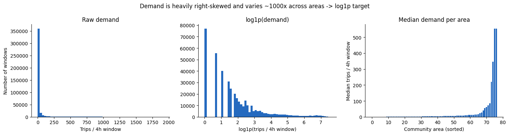
log1p(count) rather than raw counts.
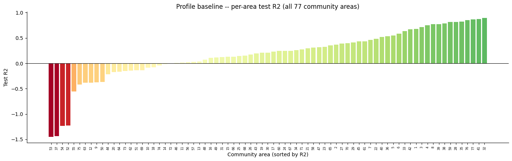
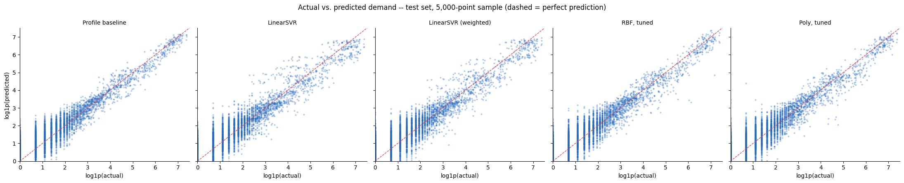
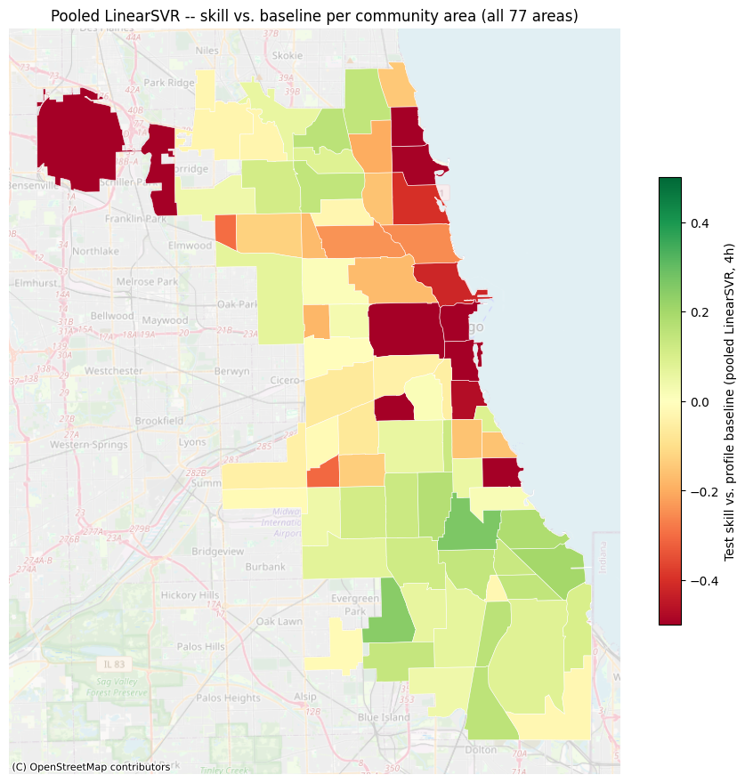
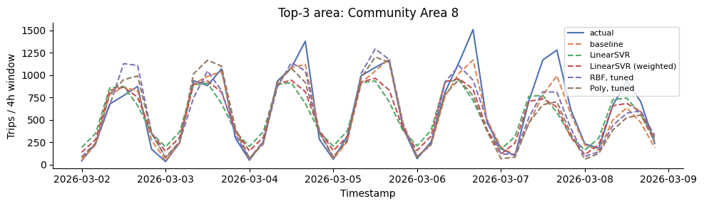
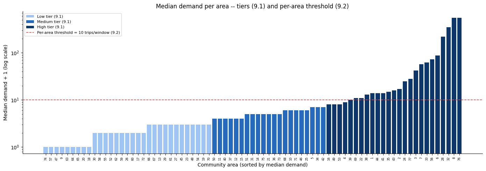
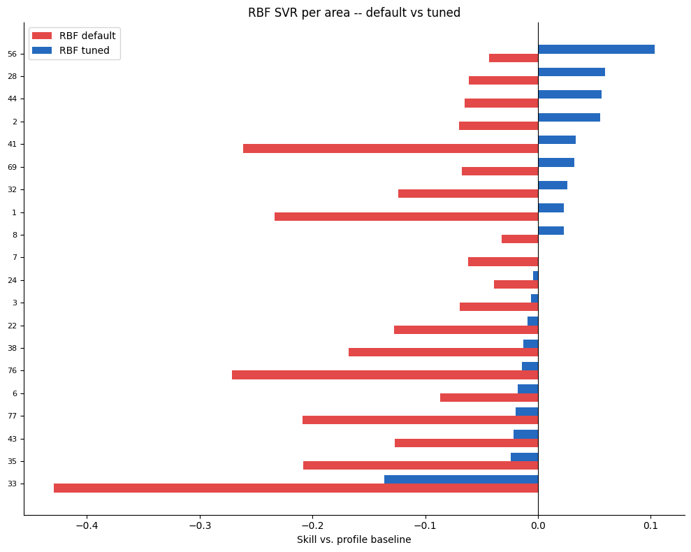
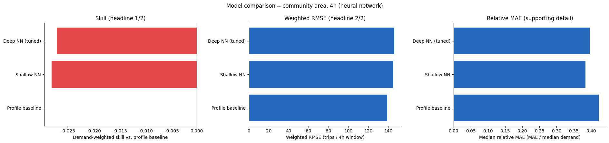
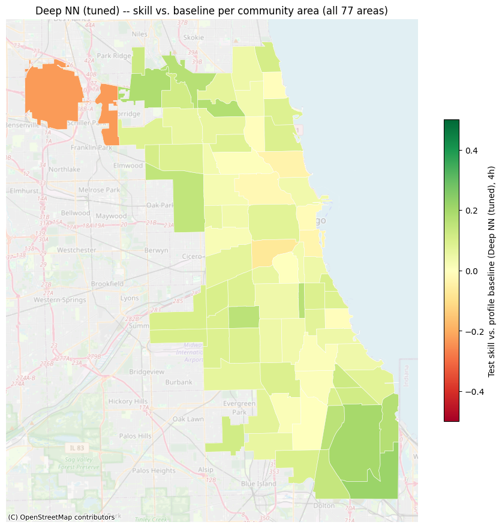
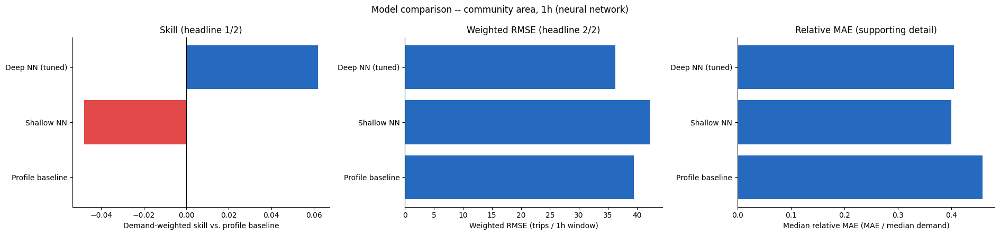
Census Tract Resolution
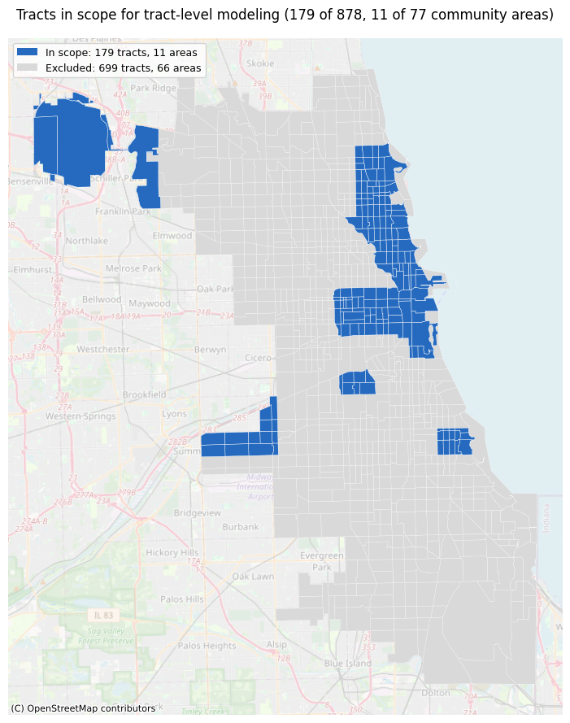
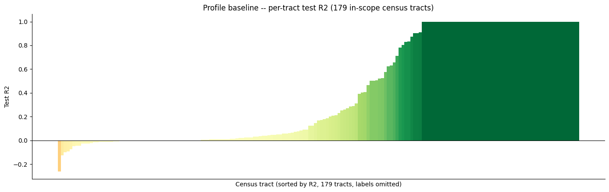
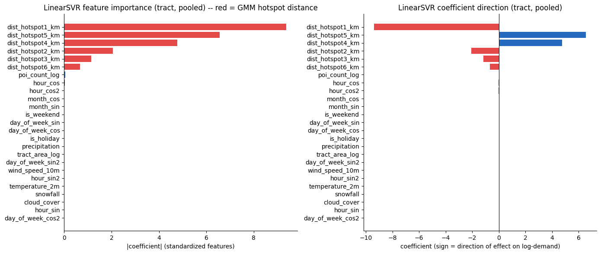
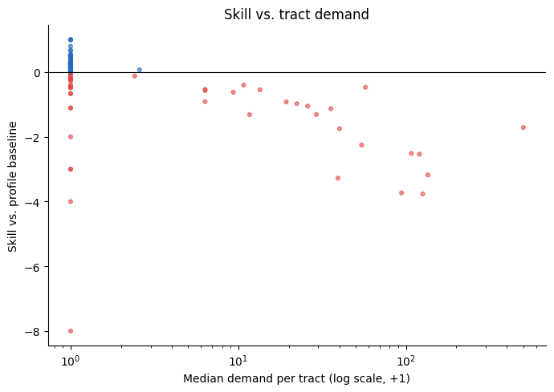
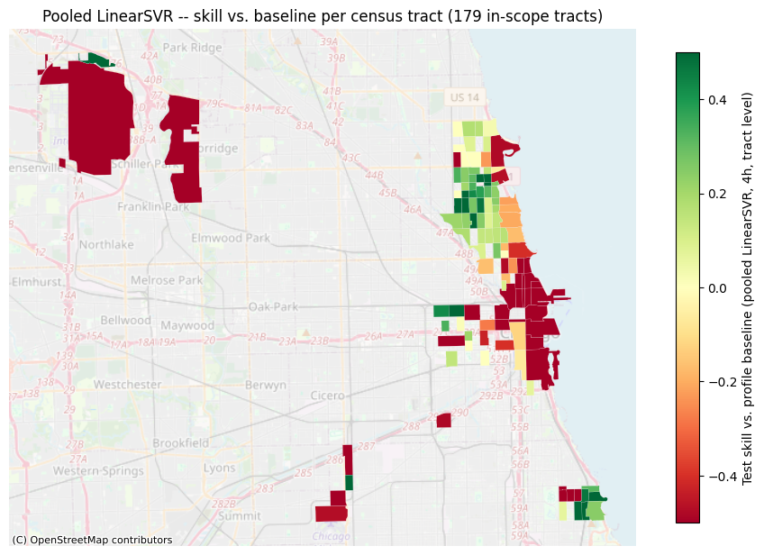
Pending
- Full model-comparison table: skill, weighted RMSE, pooled R²/MAE/RMSE per model, per resolution, both families (source data already available in
results/model_results_summary.csv). - 1-hour resolution SVR figures: the
03.02notebook has no saved execution output (see the Predictive Analytics chapter’s Limitations), so no plot output exists yet to extract from. - Census-tract NN figures: pending
03.06being finalized.
Citations and References
You can easily cite your sources using BibLaTeX. For example, you can cite the Quarto documentation (Team 2024) or a textbook like “R for Data Science” (Wickham et al. 2023). The bibliography will be automatically generated at the end of the document.
References
Team, Quarto. 2024. “Quarto: An Open-Source Scientific and Technical Publishing System.” Journal of Modern Data Science. https://quarto.org.
Wickham, Hadley, Mine Çetinkaya-Rundel, and Garrett Grolemund. 2023. R for Data Science. O’Reilly Media.